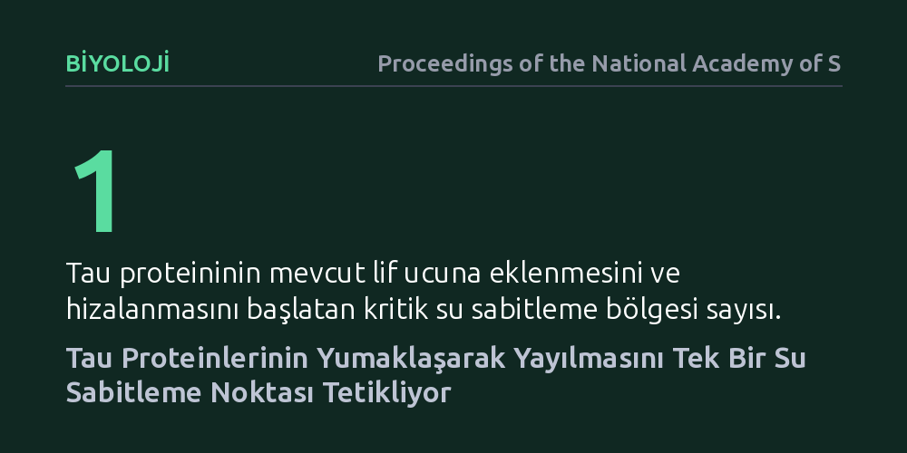

BIYOLOJI · Proceedings of the National Academy of Sciences · 2026-10-26
Araştırmacılar, Alzheimer gibi hastalıklarda biriken tau proteinlerinin mevcut liflere nasıl kusursuz bir sırayla kenetlendiğini inceledi. Sonuçlar, proteinlerin lif ucuna eklenme sürecinin, su moleküllerini belirli bir noktada sabitleyen tek bir kritik bölge tarafından başlatıldığını ortaya koydu.
Protein kümelenmesinin rastgele bir yapışma değil, tek bir su sabitleme noktasıyla yönetilen hassas bir kilit mekanizması olduğunu göstererek hedefli tedaviler için yeni bir moleküler odak sunuyor.

Alzheimer ve frontotemporal demans gibi nörodejeneratif hastalıkların merkezinde, normalde sinir hücresi iskeletini destekleyen tau proteinlerinin işlevini yitirip birbirine yapışması yatar. Sağlıklı bir nöronda mikrotübülleri stabilize eden bu proteinler, yapısal bozulmaya uğradıklarında kontrolsüzce bir araya gelerek nöronları tahrip eden lifsi yapılar (fibriller) oluşturur. Hastalığın beyin dokusunda yayılması, bu liflerin uçlarına serbest gezen yeni tau proteinlerinin eklenmesiyle gerçekleşir.
Ancak bu eklenme sıradan bir yapışma değildir. Yeni gelen tau proteininin, halihazırdaki lifin ucuna atomik düzeyde kusursuz bir kalıp gibi oturması, yani aynı hizada dizilmesi gerekir. Bilim insanları uzun süredir bu kusursuz hizalanmayı ve zincirleme birikimi tam olarak neyin tetiklediğini arıyordu. Fibrilin ucundaki hangi moleküler işaret, serbest bir proteini yakalayıp onu lifin bir parçası haline dönüştürüyordu?
Araştırmacılar, tau proteinlerinin lif uçlarına kenetlenme anını yakalayabilmek için yüksek çözünürlüklü biyofiziksel yöntemlere başvurdu. Çözelti halindeki protein hareketlerini ve yüzey etkileşimlerini atom düzeyinde izlemeye imkan tanıyan gelişmiş nükleer manyetik rezonans (NMR) spektroskopisi teknikleri kullanıldı. Bu ölçümler sayesinde hem protein zincirinin esnekliği hem de lif ucundaki mikroskobik ortam adım adım haritalandı.
Deneylerin odak noktasını, proteinlerin çevresini saran su moleküllerinin davranışı oluşturdu. Biyolojik moleküllerin etrafındaki su basit bir dolgu maddesi değildir; proteinin nasıl katlanacağını ve başka yüzeylerle nasıl temas kuracağını belirler. Ekip, fibril ucundaki suyun hareketliliğini ölçerek, serbest tau proteininin lifle ilk temas anında su moleküllerinin nasıl davrandığını laboratuvar ortamında kontrollü biçimde analiz etti.
Elde edilen bulgular, tau proteinlerinin fibril ucuna tutunmasının rastgele bir yüzey temasıyla başlamadığını ortaya koydu. Süreç, lif ucunda yer alan ve su moleküllerini adeta yerine mıhlayan tek bir kritik bölgede ('water-pinning hot spot') başlıyor. Bu özel noktada su molekülleri serbestçe hareket etmek yerine sıkıca sabitlenerek proteini belirli bir açıyla yakalayan bir ara yüzey oluşturuyor.
Araştırma, yeni eklenen tau proteininin tam da bu su sabitleme noktası sayesinde lifin ucuna 'kusursuz bir hizada' kilitlendiğini gösteriyor. Tek bir bölgenin suyu organize etmesi, proteinin diğer kısımlarının da şablona uygun şekilde lif üzerine katlanmasını tetikleyen bir ilk domino taşı görevi görüyor. Böylece serbest protein, lifin yapısını kopyalayarak patolojik zincirin yeni bir halkası haline geliyor.
Bu mekanizmanın aydınlatılması, patolojik protein birikimini durdurmaya yönelik arayışlarda bakış açısını değiştirebilecek nitelikte. Fibril büyümesinin yüzeyin geneline yayılmış belirsiz bir çekimden ziyade, tek bir kilit noktadaki su dinamiğiyle başladığının anlaşılması, gelecekte bu dar bölgeyi hedef alabilecek küçük moleküllerin tasarlanmasına temel oluşturabilir.
Yine de bu bulguları bir tedavi müjdesi gibi yorumlamamak gerekir. Çalışma, saflaştırılmış proteinlerle tüp içinde gerçekleştirilen temel bir biyofizik deneyidir; canlı hücrelerin karmaşık iç yapısında bu sürecin nasıl modüle edildiği henüz tam olarak bilinmemektedir. Elde edilen sonuçlar bir hastalığın nihai tedavisini değil, hücresel düzeydeki bir patolojinin başlangıç kuralını açıkça tarif etmektedir.